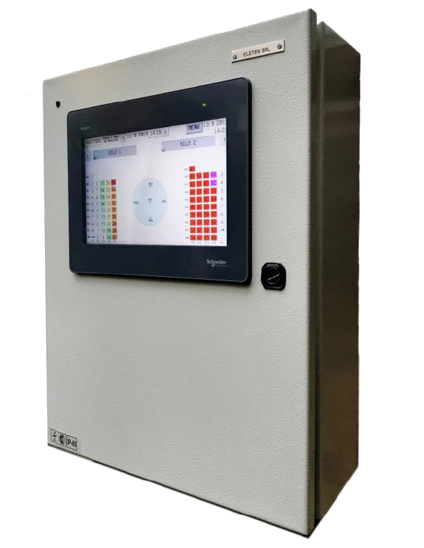

Sistema Automatizado de Termometría y Aireación
✅ DisponibleDescripcion del producto
Un Sistema Automatizado de Termometría y Aireación combina sensores de temperatura con equipos de ventilación controlados electrónicamente, permitiendo monitorear y regular de forma automática las condiciones térmicas y de ventilación en un ambiente o proceso. Este tipo de sistema se utiliza en agricultura (silos, invernaderos, compostaje), industria alimentaria, laboratorios, almacenamiento de granos, criaderos, entre otros.
Características Principales
- Monitoreo continuo: Sensores digitales o analógicos registran la temperatura en tiempo real.
- Registro de datos: Almacenamiento de históricos para análisis y trazabilidad.
- Alarmas y alertas: Notificaciones por SMS, email o aplicaciones móviles cuando hay desvíos de parámetros.
- Escalabilidad: Puede adaptarse a instalaciones pequeñas (ej. un invernadero) o grandes (ej. silos de varios miles de toneladas).
Beneficios
- Optimización de la calidad del producto: Mantiene condiciones estables que evitan deterioro de granos, alimentos o materiales sensibles.
- Ahorro energético: Disminuye el uso innecesario de ventiladores.
- Mayor seguridad: Disminuye riesgos de explosiones de polvo en silos o problemas de salud en espacios cerrados.
- Trazabilidad y control: Cumplimiento de normas de seguridad alimentaria e industrial.